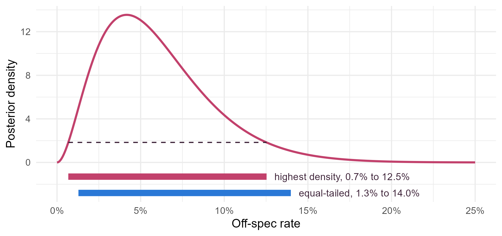

Module 5 · Lesson 5 of 13 Week 80 of 160 About 5–7 hours
Posterior inference
From a distribution to a decision
Turn a posterior into answers. Choose a point estimate with a loss function, compare equal-tailed and highest posterior density intervals, test hypotheses with posterior probabilities and Bayes factors, and see why a Bayes factor for a point hypothesis depends so strongly on the prior. Finish by deciding whether to switch to the new recipe, using its expected value.
A posterior distribution is the complete answer to a Bayesian analysis. But a plant manager doesn’t want a distribution: she wants a number, a range, a yes or a no. This lesson is about getting those from a posterior, and about doing it in a way that matches the question.
We’ll stay with the new recipe. With the team’s prior, its off-spec rate has the posterior Beta(3, 47), and the old recipe’s rate is 38/480 = 7.9%. That posterior is skewed, with a long right tail, which is exactly when the different summaries disagree.
Mean, median, mode, intervals, Bayes factors… so many ways to summarize! The trick is to ask: what question am I answering? Then the right one picks itself.
In this lesson you’ll:
- compare the posterior mean, median and mode, and see which loss each one minimizes
- compute highest posterior density intervals
- test hypotheses with posterior probabilities and Bayes factors
- see why Bayes factors for point hypotheses depend on the prior
- make a decision by maximizing expected value
Point estimates
If you must report one number, which? Each common choice is the best answer to a different question, and the question is described by a loss function: how bad it is to report \hat\theta when the truth is \theta.
| Estimate | Minimizes the expected | Loss |
|---|---|---|
| Posterior mean | squared error | (\hat\theta - \theta)^2 |
| Posterior median | absolute error | \lvert\hat\theta - \theta\rvert |
| Posterior mode (MAP) | “all or nothing” loss | 0 if exactly right, 1 otherwise |
The mode is also called the maximum a posteriori (MAP) estimate. For a symmetric posterior, all three agree. For a skewed one, they don’t.
Your turn. Compute the three point estimates for Beta(3, 47).
The median is the 50th percentile.
c(mean = a / (a + b), median = qbeta(0.5, a, b), mode = (a - 1) / (a + b - 2))A mean of 6.0%, a median of 5.4% and a mode of 4.2%. The right tail pulls the mean up. For reporting an off-spec rate, where an error in either direction costs about the same, the median or the mean is a better choice than the mode, which sits at the low end of the plausible range.
Your turn. Check the table with posterior draws. For each candidate estimate from 0 to 0.2, compute the average squared error and the average absolute error over 20,000 draws, and find the candidates that minimize them.
The absolute error is abs(draws - e).
set.seed(5051)
draws <- rbeta(20000, a, b)
candidates <- seq(0, 0.2, by = 0.0005)
squared <- sapply(candidates, function(e) mean((draws - e)^2))
absolute <- sapply(candidates, function(e) mean(abs(draws - e)))
c(best_squared = candidates[which.min(squared)], best_absolute = candidates[which.min(absolute)])5.95% and 5.35%: the draws’ mean and median, 5.97% and 5.37%, to the nearest step of the candidate grid. A loss function turns “what’s the best estimate?” into a question with an answer. And if the costs aren’t symmetric, for example if underestimating the off-spec rate is three times as bad as overestimating it, the best estimate is a different quantile of the posterior.
Highest posterior density intervals
A 95% credible interval is any interval with 95% posterior probability, and there are infinitely many. The equal-tailed interval cuts 2.5% off each end. The highest posterior density (HPD) interval is the shortest one: every value inside it has a higher posterior density than every value outside. For a skewed posterior, it shifts toward the peak.
To find it for a beta posterior, slide a window of 95% probability along the distribution, starting at lower-tail probability p and ending at p + 0.95, and find the p that makes it narrowest.
Your turn. Use optimize() to find the HPD interval of Beta(3, 47), and compare its width with the equal-tailed interval’s.
The window ends at best$minimum + 0.95.
width <- function(p) qbeta(p + 0.95, a, b) - qbeta(p, a, b)
best <- optimize(width, interval = c(0, 0.05))
c(hpd = qbeta(c(best$minimum, best$minimum + 0.95), a, b), hpd_width = best$objective, equal_tailed_width = width(0.025))The HPD interval runs from 0.7% to 12.5%, 11.9 points wide, against the equal-tailed 1.3% to 14.0%, 12.7 points wide. It’s shifted toward the low rates, where the posterior is densest. At its two ends, the posterior density is the same, 1.84: that’s the property that defines it.
th <- seq(0, 0.25, by = 0.0005)
ggplot(data.frame(theta = th, density = dbeta(th, 3, 47)), aes(x = theta, y = density)) +
geom_line(color = "#C2416C", linewidth = 1) +
annotate("segment", x = 0.00674, xend = 0.1253, y = 1.84, yend = 1.84, linetype = "dashed", color = "#3A1F35") +
annotate("segment", x = 0.00674, xend = 0.1253, y = -1.3, yend = -1.3, linewidth = 3, color = "#C2416C") +
annotate("segment", x = 0.0128, xend = 0.1398, y = -2.8, yend = -2.8, linewidth = 3, color = "#2a78d6") +
annotate("text", x = 0.1300, y = -1.3, label = "highest density, 0.7% to 12.5%", hjust = 0, size = 3.5, color = "#3A1F35") +
annotate("text", x = 0.1445, y = -2.8, label = "equal-tailed, 1.3% to 14.0%", hjust = 0, size = 3.5, color = "#3A1F35") +
scale_x_continuous(labels = scales::percent, limits = c(0, 0.25)) +
scale_y_continuous(breaks = seq(0, 12, by = 4)) +
labs(x = "Off-spec rate", y = "Posterior density") +
theme_minimal(base_size = 12)
With posterior draws instead of a formula, the HPD interval is the shortest stretch of the sorted draws that contains 95% of them.
Your turn. Find it from the 20,000 draws.
You want the narrowest window: which.min(widths).
set.seed(5051)
s <- sort(rbeta(20000, a, b))
k <- floor(0.95 * length(s)) # each window holds k + 1 draws
widths <- s[(k + 1):length(s)] - s[1:(length(s) - k)] # the width of every window
i <- which.min(widths)
c(s[i], s[i + k])From 0.6% to 12.4%, close to the exact 0.7% to 12.5%. coda::HPDinterval() does the same calculation. HPD intervals have one drawback: unlike equal-tailed ones, they change if you transform the parameter. The HPD interval for the log of the rate isn’t the log of this one.
Testing hypotheses
A Bayesian test of a hypothesis is direct: compute its posterior probability. “The new recipe is better” is H_1: \theta < 0.079, and its posterior probability is pbeta(old_rate, 3, 47), 76%. Its alternative, H_0: \theta \geq 0.079, has 24%.
But how much of that 76% came from the data, and how much from the team’s optimistic prior? The Bayes factor separates the two. It’s the factor by which the data multiplied the odds:
\underbrace{\frac{P(H_1 \mid y)}{P(H_0 \mid y)}}_{\text{posterior odds}} = \underbrace{\frac{p(y \mid H_1)}{p(y \mid H_0)}}_{\text{Bayes factor } BF_{10}} \times \underbrace{\frac{P(H_1)}{P(H_0)}}_{\text{prior odds}}.
A Bayes factor above 1 means that the data favor H_1, and below 1, that they favor H_0. A common rough scale, from Kass and Raftery (1995), calls 1 to 3 “not worth more than a bare mention”, 3 to 20 “positive”, 20 to 150 “strong” and over 150 “very strong” evidence.
Your turn. Compute the prior odds that the recipe is better, under the Beta(1, 19) prior, the posterior odds under Beta(3, 47), and the Bayes factor.
The Bayes factor is the posterior odds divided by the prior odds.
prior_odds <- pbeta(old_rate, 1, 19) / pbeta(old_rate, 1, 19, lower.tail = FALSE)
post_odds <- pbeta(old_rate, 3, 47) / pbeta(old_rate, 3, 47, lower.tail = FALSE)
c(prior_odds = prior_odds, post_odds = post_odds, bayes_factor = post_odds / prior_odds)A surprise. The prior odds were 3.8 to 1 in favor of “better”, a prior probability of 79%, and the posterior odds are 3.1 to 1. The Bayes factor is 0.82: the trial slightly favored “not better”. All of the 76% came from the prior. The trial’s 6.7% was a bit worse than the team expected, so it moved them back a little. Posterior probabilities answer “what should I believe now?”, and Bayes factors answer “what did these data say?”. Report both when the prior is doing a lot of work.
Bayes factors for point hypotheses
A different kind of question: “Is the new recipe’s rate the same as the old one’s?” That’s a point hypothesis, H_0: \theta = 0.079 exactly, against H_1: \theta \sim \text{Beta}(1, 19). A continuous posterior gives a single point zero probability, so here the Bayes factor is computed from the marginal likelihood of each hypothesis: the probability of the data averaged over its prior.
- Under H_0, it’s just the binomial probability,
dbinom(2, 30, old_rate). - Under H_1, it’s the beta-binomial probability from Lesson 2: \binom{30}{2} B(2 + a, 28 + b)/B(a, b).
Your turn. Compute both, and the Bayes factor BF_{01} in favor of “the same”.
BF_{01} puts H_0’s marginal likelihood on top: p_y_h0 / p_y_h1.
p_y_h0 <- dbinom(2, 30, old_rate)
p_y_h1 <- choose(30, 2) * beta(2 + 1, 28 + 19) / beta(1, 19)
c(p_y_h0 = p_y_h0, p_y_h1 = p_y_h1, bf01 = p_y_h0 / p_y_h1)The data are 1.8 times as probable if the rate is exactly the old one’s. That’s evidence “not worth more than a bare mention” for “no change”: 30 batches can’t distinguish a rate of 7.9% from the nearby rates H_1 allows.
Bayes factors for point hypotheses have a notorious property: they depend heavily on the prior under H_1, even when the posterior under H_1 hardly does.
Your turn. Recompute BF_{01} with four priors for H_1: flat Beta(1, 1), the team’s Beta(1, 19), Beta(0.5, 9.5) and Beta(0.1, 1.9). The last three all have a mean of 5%, worth 20, 10 and 2 batches.
The prior’s beta function is beta(a1, b1).
bf01 <- function(a1, b1) dbinom(2, 30, old_rate) / (choose(30, 2) * beta(2 + a1, 28 + b1) / beta(a1, b1))
c(flat = bf01(1, 1), team = bf01(1, 19), weaker = bf01(0.5, 9.5), vague = bf01(0.1, 1.9))From 1.8 to 8.4. The vaguer H_1’s prior, the more the Bayes factor favors H_0, because a vague H_1 spreads its predictions over rates the data rule out, and so predicts the actual data poorly. Make the prior vague enough, and any data at all will favor the point hypothesis. That’s Lindley’s paradox. The lesson: never use a “noninformative” prior when computing a Bayes factor, and for estimating a rate, a posterior interval is usually more informative than a test of a point hypothesis that nobody believed anyway.
Challenge round
Challenge 1 · Should the plant switch? “Is the new recipe better?” is the wrong question. The plant manager’s real question is whether to switch, and that depends on money. The new recipe saves €1,500 of steam per batch, and every off-spec batch costs €12,000 to rework. Over the next 100 batches, switching gains 100 \times (1500 - 12000\,(\theta - 0.079)) euros. Find its posterior expected value and the probability that switching pays.
The extra off-spec cost compares \theta with the old rate, old_rate.
set.seed(5052)
theta <- rbeta(100000, a, b)
gain <- 100 * (1500 - 12000 * (theta - old_rate))
c(expected_gain = mean(gain), p_pays = mean(gain > 0))An expected gain of €173,000 over 100 batches, and a 99.9% probability that switching pays. The steam savings are so large that the new recipe would have to run off spec 12.5 points more often than the old one to lose money, and the posterior says that’s almost impossible. The probability that it’s better is only 76%, but the decision is easy. Bayesian decision theory chooses the action with the highest expected value under the posterior. It’s the right tool whenever a test result has to turn into an action.
Challenge 2 · The Savage-Dickey shortcut. When H_0 is a point inside H_1’s prior, the Bayes factor has a shortcut: BF_{01} is the posterior density at the point divided by the prior density there, both under H_1. Check that it gives the 1.81 you found with the team’s prior.
Divide by the prior density, Beta(1, 19).
dbeta(old_rate, 3, 47) / dbeta(old_rate, 1, 19)1.81, exactly. The data raised the density at 7.9% by a factor of 1.81, from the prior to the posterior. This Savage-Dickey density ratio makes Bayes factors for point hypotheses easy to get from MCMC draws: estimate the two densities at the point, with a kernel density estimate (Module 4) if there’s no formula.
Quick quiz
1. Which point estimate minimizes the expected absolute error?
The mean minimizes squared error, the median absolute error, and the mode the “all or nothing” loss.
2. What defines the highest posterior density interval?
For a symmetric posterior it’s the same as the equal-tailed interval. For a skewed one, it shifts toward the peak.
3. The posterior probability of H_1 is 76%, but the Bayes factor is 0.82. What does that mean?
The Bayes factor measures what the data did to the odds, separately from where the odds started.
4. What is the marginal likelihood of a hypothesis?
A Bayes factor is the ratio of two marginal likelihoods. That’s why it depends on the priors.
5. Testing a point hypothesis, you make the prior under H_1 vaguer and vaguer. What happens to BF_{01}?
That’s Lindley’s paradox. Bayes factors need real, informative priors under each hypothesis.
6. The new recipe has only a 76% probability of being better, yet switching to it has a 99.9% probability of paying off. How?
Decisions depend on costs and benefits, not just on probabilities.
Wrap-up
You can now turn any posterior into the answer a question needs. Here’s what you’ve learned:
- Point estimates answer different questions: for Beta(3, 47), the mean 6.0% minimizes squared error, the median 5.4% absolute error, and the mode 4.2% the all-or-nothing loss.
- HPD intervals are the shortest credible intervals: 0.7% to 12.5%, against the equal-tailed 1.3% to 14.0%.
- Posterior probabilities test hypotheses directly, and Bayes factors say what the data contributed: 0.82, so the 76% for “better” came from the prior.
- Point hypotheses need marginal likelihoods, and their Bayes factors depend strongly on the prior under the alternative: from 1.8 to 8.4 here.
- Decisions maximize posterior expected value: switching gains an expected €173,000 per 100 batches.
TipPractice in RStudio (optional, about an hour)
- Asymmetric loss. Suppose underestimating the off-spec rate costs three times as much as overestimating it. Show with draws that the best estimate is the posterior’s 75th percentile. (Hint: the loss is 3(\theta - \hat\theta) if \hat\theta < \theta, and \hat\theta - \theta otherwise.)
- HPD for a bimodal posterior. Mix two normal distributions, 60% N(0, 1) and 40% N(5, 1), draw 100,000 values, and plot them. Compute an equal-tailed 80% interval and an 80% highest-density region (it may come in two pieces). Which describes the distribution better?
- The break-even. In the switching decision, how much would rework have to cost per batch before the probability that switching pays fell below 90%?
- coda. Compare your HPD intervals with
coda::HPDinterval(coda::mcmc(draws)).
NoteKey words from this lesson
- Loss function
- How bad it is to report an estimate when the truth is something else. Each common point estimate minimizes the expected value of one loss.
- Maximum a posteriori (MAP) estimate
- The posterior mode, the single most probable value.
- Highest posterior density (HPD) interval
- The shortest interval with a stated posterior probability.
- Bayes factor
- The ratio of the marginal likelihoods of two hypotheses: how much the data change the odds between them.
- Marginal likelihood
- The probability of the data under a hypothesis, averaged over that hypothesis’s prior.
- Lindley’s paradox
- With a vague enough prior under the alternative, a Bayes factor favors a point hypothesis whatever the data say.
- Savage-Dickey density ratio
- For a point hypothesis nested in the alternative, the Bayes factor is the posterior density at the point divided by the prior density there.
- Bayesian decision theory
- Choosing the action with the best expected outcome, averaged over the posterior.
NoteWant to read more?
- Alicia Johnson, Miles Ott and Mine Dogucu, Bayes Rules!, chapter 8, “Posterior inference & prediction”, on credible intervals, hypothesis tests and Bayes factors.
- Robert Kass and Adrian Raftery, “Bayes factors”, Journal of the American Statistical Association (1995). The classic review, with the evidence scale used in this lesson.
- Andrew Gelman and others, Bayesian Data Analysis (3rd edition), chapter 9, “Decision analysis”, with worked examples of choosing actions by expected value.